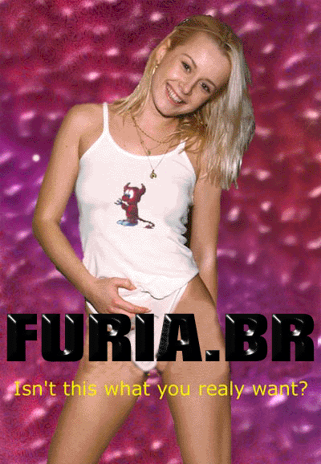

Br4s1l rUl3Z - Furia.BR 0wn3rZ !
__ _ _ / _|_ _ _ __(_) __ _ | |__ _ __ | |_| | | | '__| |/ _` | | '_ \| '__| | _| |_| | | | | (_| |_| |_) | | |_| \__,_|_| |_|\__,_(_)_.__/|_|  Segmentat10n fault
- Furia.BR 0wnz your B0x
Gr33tZ: Hackers Family, Crime Boys, Prime Suspectz, Data Cha0s, r00t.br, ASH, UnsecurityBR
#hacker, #coders, #linux at brasIRC.net... ^cOrvO^, sanatorium, iSC, bogomips, jeh, etc
furiabr@mail.com